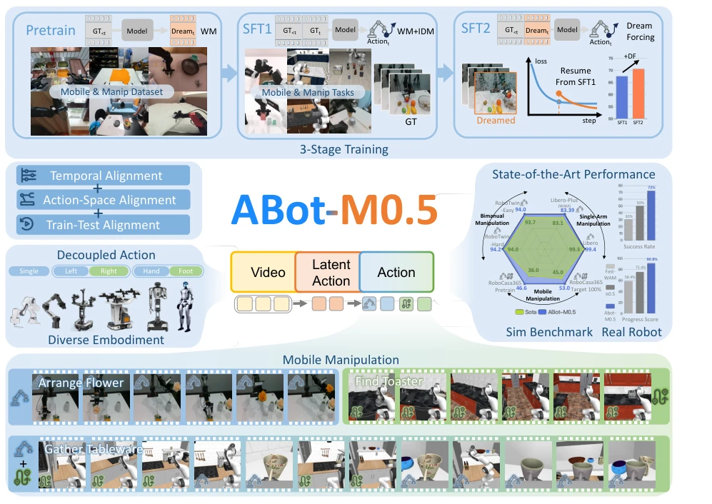
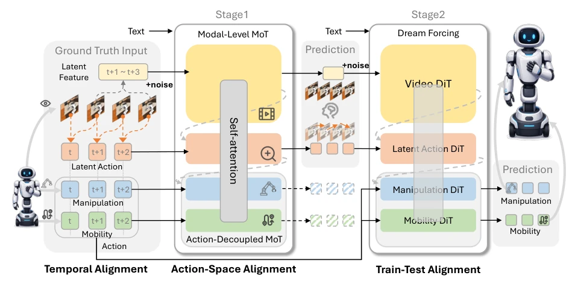
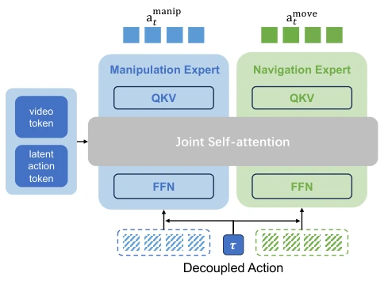
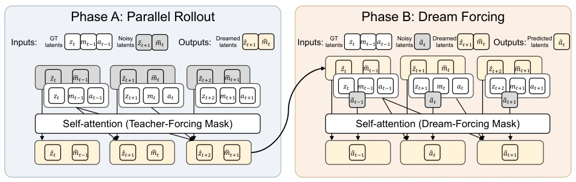
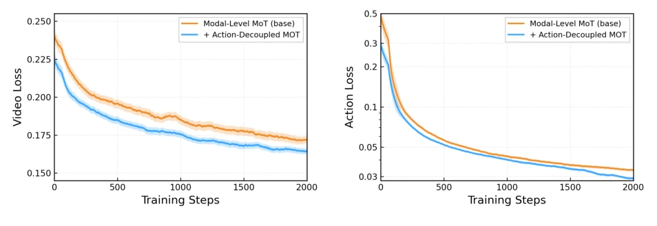
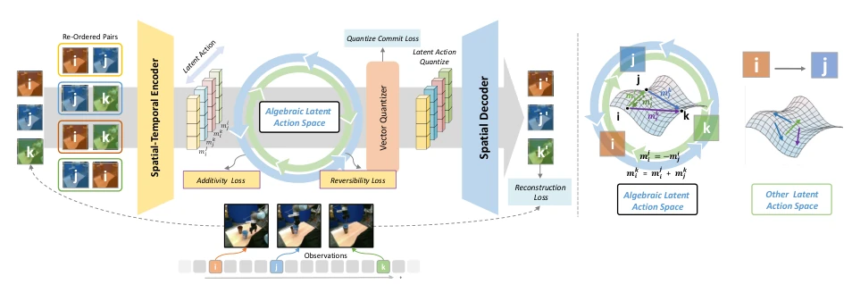
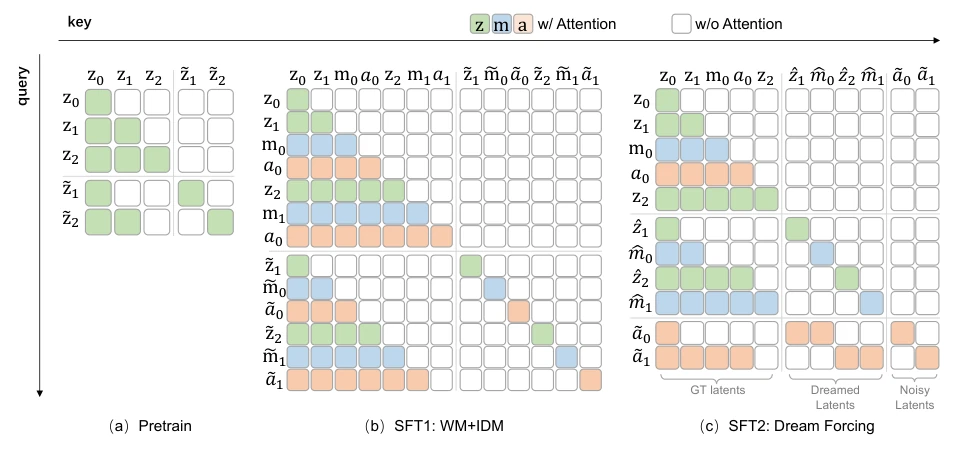
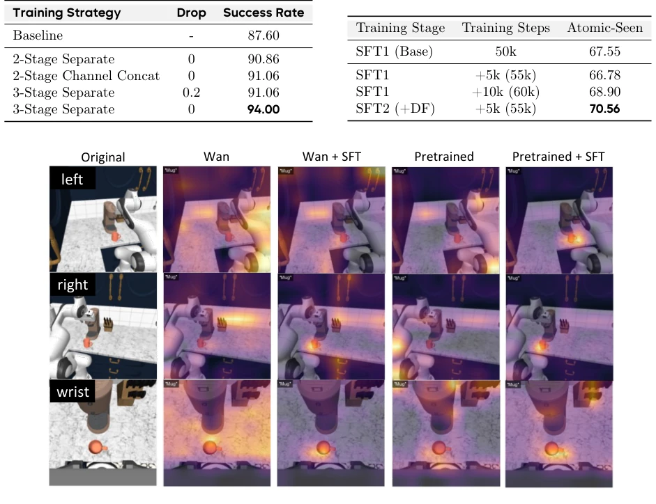

Figure 4 Training paradigms for World Action Models. Existing WAM training paradigms (a) and (b) suffer from train-test mismatch, as they condition on data distributions absent during inference. (a) In Teacher Forcing, the model is trained to denoise actions conditioned on clean, ground-truth future videos. (b) In Diffusion Forcing, the model jointly denoises future videos and actions with varying timesteps. Although the joint denoising scheme can be adapted for inference, it is difficult to mirror the exact timestep compositions used during training, thereby increasing the learning complexity and exacerbating the distribution gap. (c) Our Dream Forcing conditions action prediction on self-dreamed videos generated by the model itself. This paradigm closely mirrors the inference process, ac
方法Method
ABot-M0.5 的核心是“对齐”原则，整体采用 Video Latent -> Latent Action -> Robot Action 的级联生成框架。首先，引入中间层“隐式动作”（Latent Action），作为视频潜变量与具体机器人动作之间的桥梁，解决时间粒度问题。其次，设计双路 Mixture-of-Transformers (D-MoT) 架构，在模态层和解耦动作子空间层（移动 vs 操作）分别解耦，避免不同动力学特征的梯度冲突。最后，提出 Dream Forcing 训练策略，分两阶段前向传播：Phase A 生成“梦境”视频潜变量，Phase B 基于这些自生成的视频潜变量训练动作预测，强制训练分布与推理分布对齐。训练上采用 Conditional Flow Matching (CFM)，并经过预训练、SFT1、SFT2 三阶段渐进式优化，确保模型既懂世界又懂控制。
—

Figure 1 Overview of ABot-M0.5. ABot-M0.5 is a granularity-aligned, action-disentangled, and train-test-consistent world-action model for mobile manipulation. Top: The 3-stage training pipeline (Pretrain, SFT1, SFT2 ) progressively improves the model. The final Dream-Forcing stage (SFT2) uses model-predicted videos to train inverse dynamics, significantly boosting robustness. Left & Center: To solve structural mismatches, we design a Video →Latent Action →Action pipeline for temporal alignment, and use a dual-level architecture to decouple different action spaces (e.g., base movement and arm manipulation), making the framework adaptable to diverse robot embodiments. Right: ABot-M0.5 achieves state-of-the-art performance on both simulation benchmarks (radar chart) and real-world mobile mani

Figure 2 Overall architecture of ABot-M0.5. The model jointly predicts future video latents, frame-level latent actions, and executable actions through a structured, asymmetric cascade design of a dual-level MoT. The Action- Decoupled MoT disentangled action into mobile and manipulation and predict together .

Figure 3 Dual-level Mixture-of-Transformers. The architecture disentangles modality-specific representations and heterogeneous action subspaces while preserving coordinated reasoning through shared attention. We omit the video and latent action expert for clarity.

Figure 5 Illustration of two-phase training strategy in Dream Forcing. In Phase A, the model performs a standard forward pass to predict the velocity field, yielding clean dreamed latents ˆzt+1, ˆmt, which are sent to Phase B as conditions to conduct a second forward pass to predict the final action ˆat.
Figure 8 Visualization of some results on RoboCasa365. We show video frames of both real camera observations and model-dreamed scenarios for each sample. Here we decompose the task into several subtasks, using yellow and green to distinguish between mobility and manipulation, respectively.

Figure 10 Training dynamics of different MoT architecture designs. Adding action-decoupled MoT demonstrates a faster convergence rate compared to the modal-level MoT.
其他图片Other Figures

Figure 6 Model structure of ALAM.

Figure 7 Attention masks of different training stages.

Figure 11 Attention maps of different training strategies. We calculate Text-video Text-conditioned attention maps under different training stages and model variants. Pretraining and downstream fine-tuning progressively improve the alignment between textual semantics and task-relevant visual regions.